本地2026-11-15 · 最后限定纠偏。已改为接触期间逐节点湿区通量/ΔJ增量预算，冻结液丝cohort，离水停止进水；有限宽度根部过渡和非均匀厚缘。非SPH/MPM，不声称全域守恒。实际Read四图：仅石头前进水滞后通过；根部牵连不清，仍薄壳+粗短杆，.282/.295为脱滴前的早期阶段，不能据此否定实际脱滴。已按真实事件另拍08–10；根部与整体水感仍未通过，停止调参。02–05为本轮新图和节点/cohort/GL JSON；其余图片、metrics及CPU/RAF为前轮历史。测试不替代视觉。
完整有效快照 · 结构与GL指标 · 正常CPU/RAF · 子弹CPU/RAF · 67项代码回归（非视觉验收） · 类型检查 · 构建 · 实际方法与局限 · 回到游戏
同 physical seed271/T0、visual17/.35/.8/1.1；所有侧面阶段共用实际机位，具体camera/time见每图JSON。首触0.260366272s、离水0.276128326s。GPU timerquery不可用，不提供GPU耗时。正常与子弹图来自真实播放后的暂停，不是概念图。
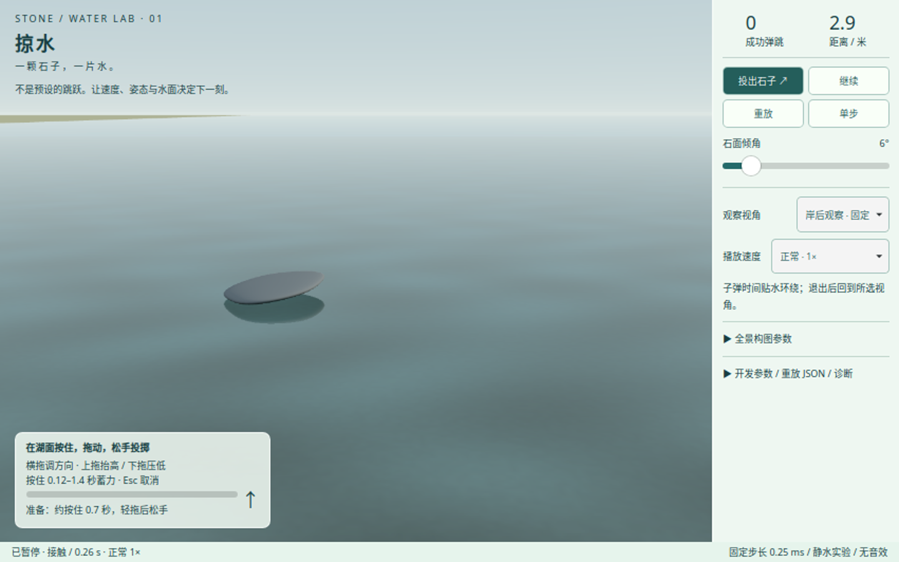
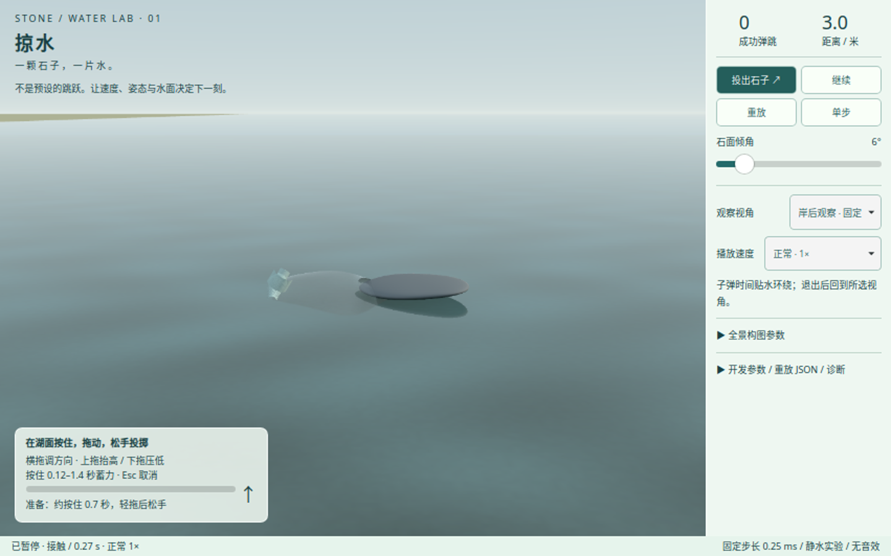
同机位前版：previous JSON
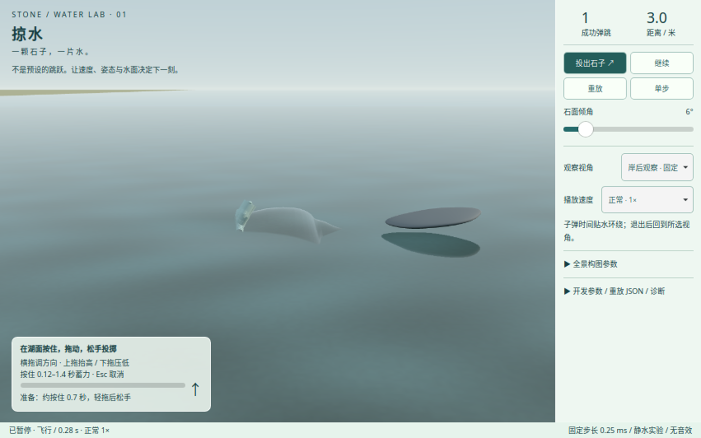
同机位前版：previous JSON
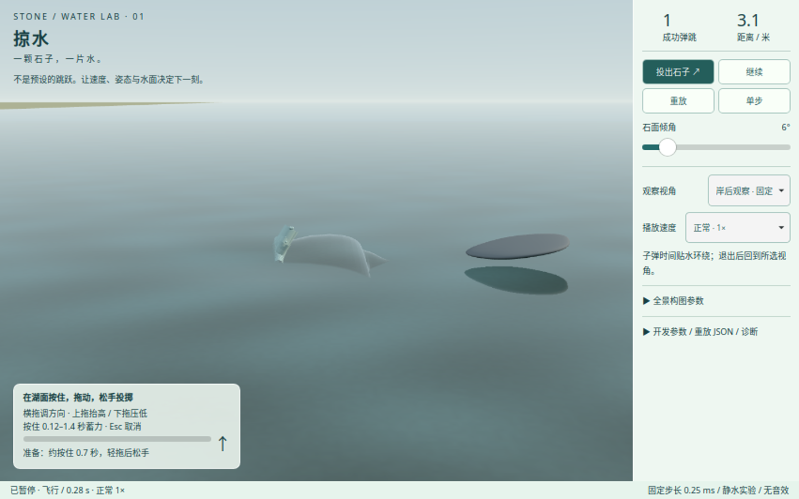
同机位前版：previous JSON
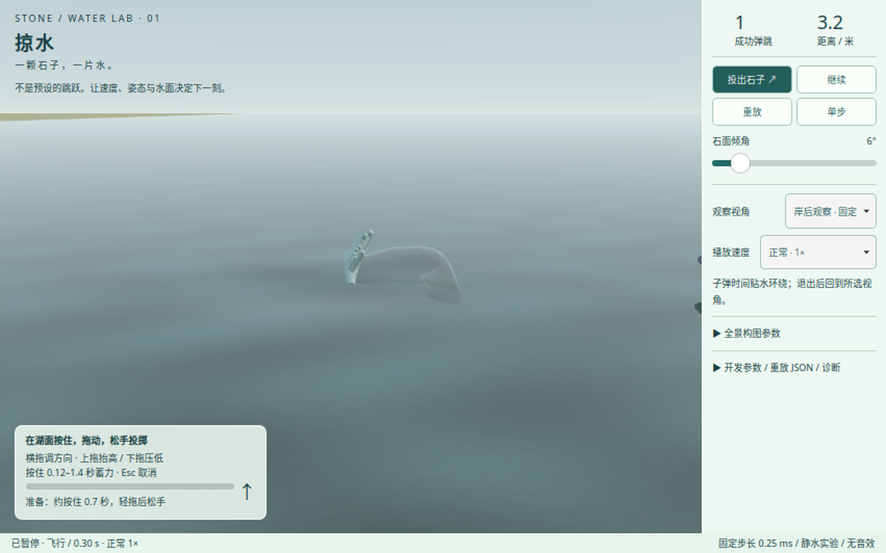
同机位前版：previous JSON
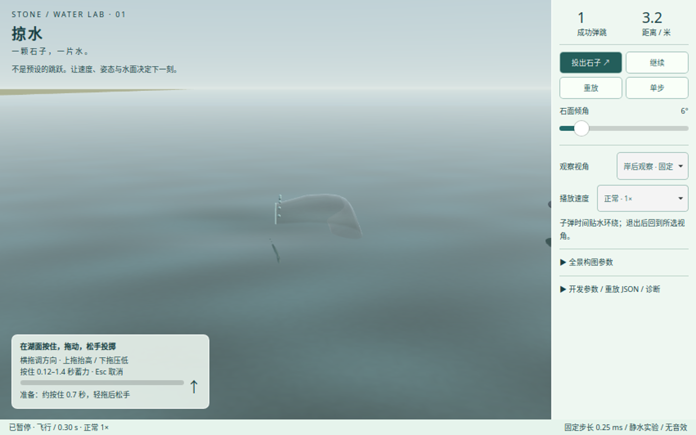
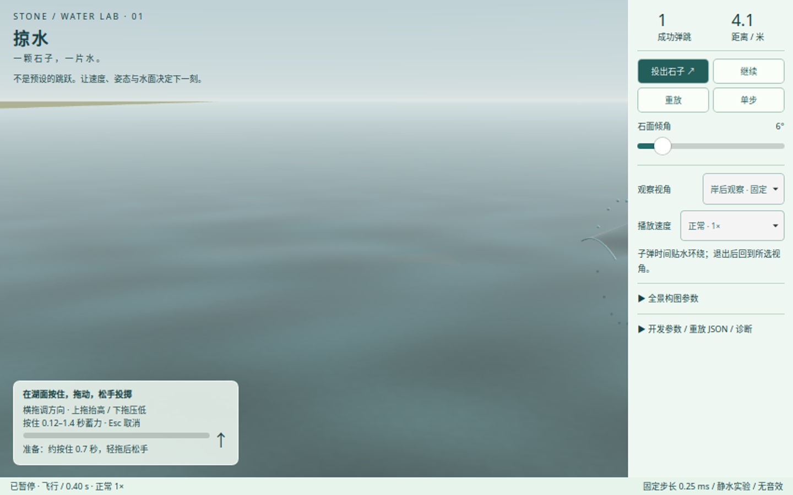
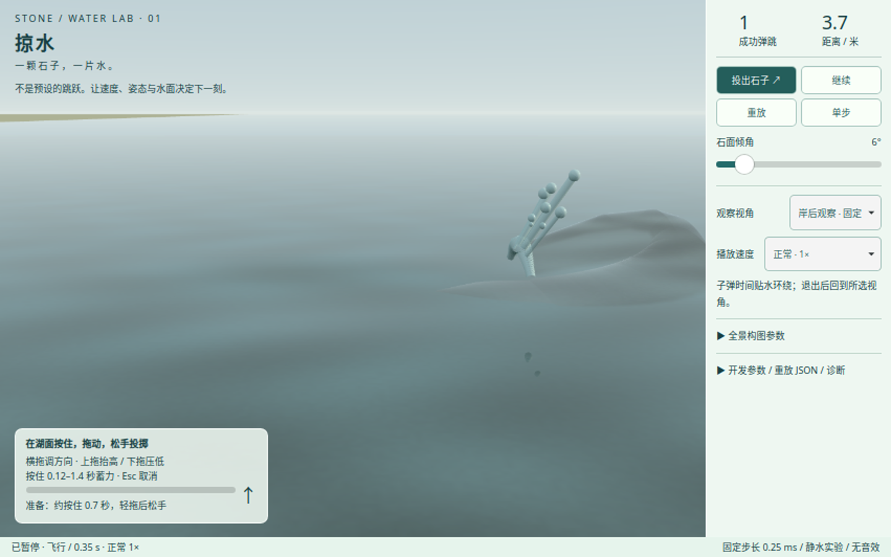
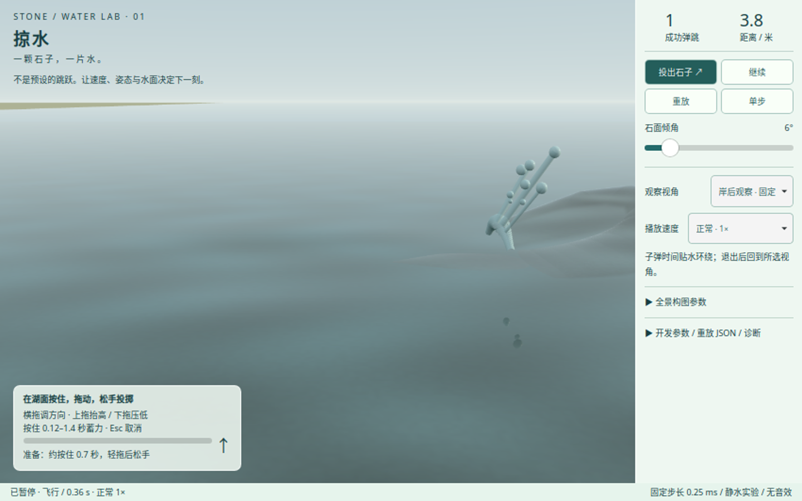
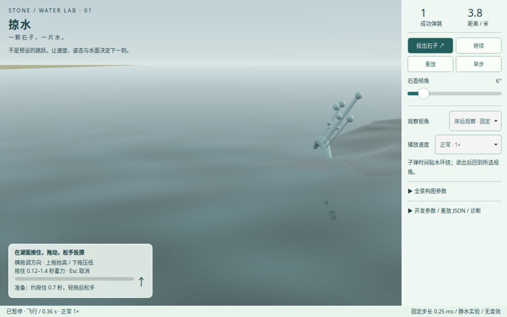
模型第0液丝脱滴为0.361543s。正确时刻可读局部端滴分离，但收颈仍不清、杆球感仍在；不是视觉通过。
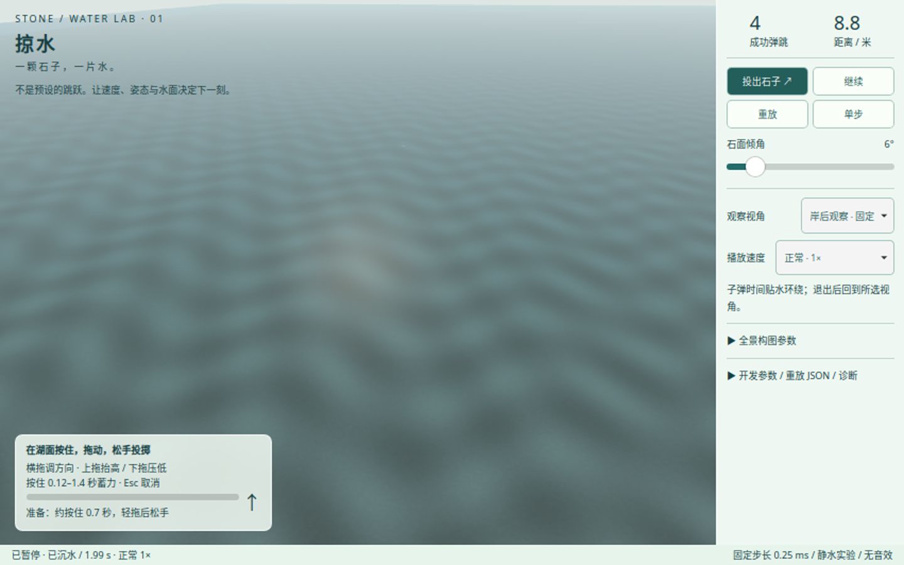
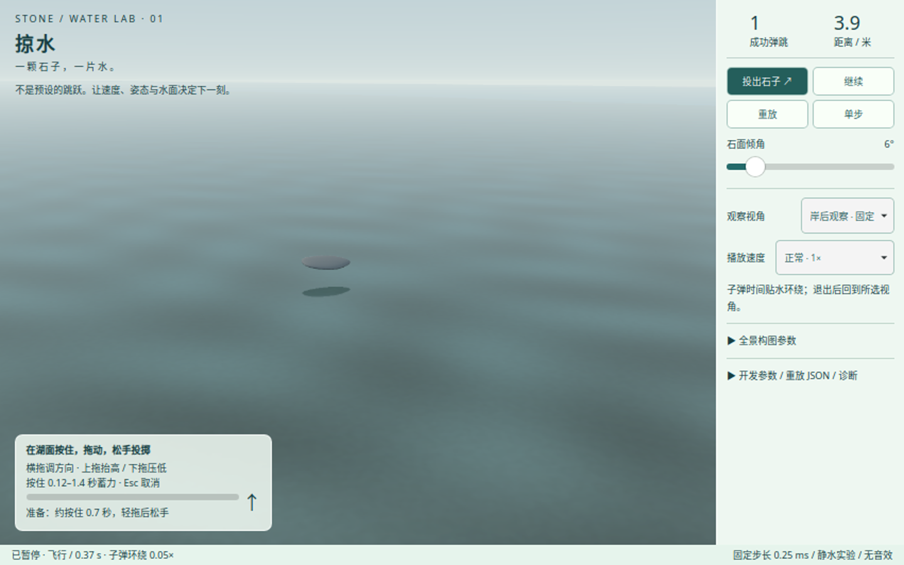
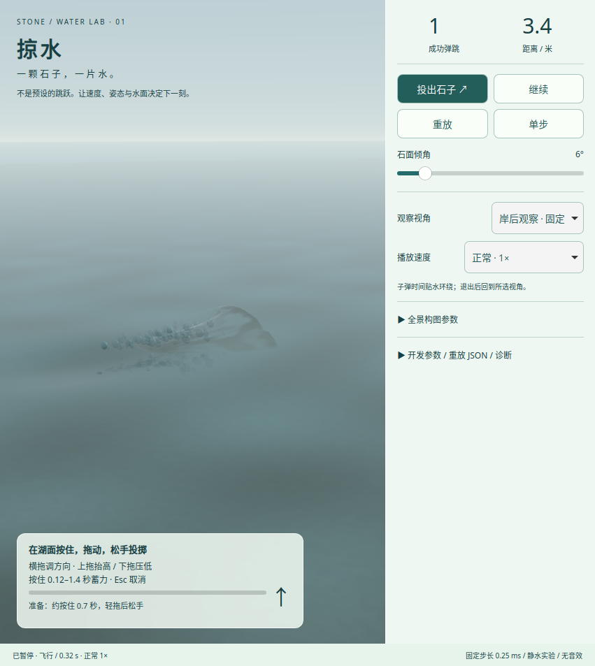